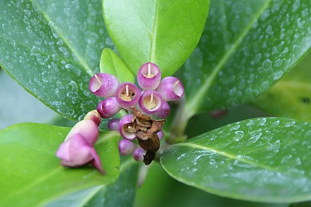

Schlegeliaceae
Schlegeliaceae is a relatively small family of woody plants, primarily comprising lianas, shrubs, and small trees native to the Neotropics. Positioned within the large order Lamiales, its members often exhibit an epiphytic or hemiepiphytic lifestyle and are characterized by opposite, simple leaves, bilaterally symmetrical tubular flowers, and typically berry-like fruits.
Overview
Schlegeliaceae is a family of flowering plants within the asterid clade, specifically belonging to the order Lamiales. It is a relatively small family, containing about 4 genera (Schlegelia, Exarata, Gibsoniothamnus, Synapsis) and approximately 30-35 species. Its recognition as a distinct family is relatively recent, as its genera were previously often placed within Bignoniaceae or Scrophulariaceae based on morphological similarities.
The family has a strictly Neotropical distribution, found in Central America, South America, and the Caribbean islands. Plants in this family are typically woody lianas (vines), shrubs, or small trees. A notable ecological characteristic is the prevalence of an epiphytic (growing on other plants) or hemiepiphytic (starting life on another plant) habit, particularly within the largest genus, Schlegelia. They often utilize adventitious roots for climbing and support.
While not possessing major economic crops, some species may be encountered in tropical botanical gardens or used locally. The family's distinct phylogenetic position and unique combination of features (woody epiphytism, simple opposite leaves, berry fruits in Lamiales) make it botanically interesting.
Quick Facts
- Scientific Name: Schlegeliaceae
- Common Name: (None widely accepted)
- Number of Genera: Approximately 4
- Number of Species: Approximately 30-35
- Distribution: Neotropics (Central America, South America, Caribbean)
- Evolutionary Group: Eudicots - Asterids - Lamiids - Lamiales
Key Characteristics
Growth Form and Habit
Members are exclusively woody plants, typically growing as lianas (woody vines), shrubs, or occasionally small trees. A significant portion of species, especially in the genus Schlegelia, exhibit an epiphytic or hemiepiphytic lifestyle, often using adventitious roots for attachment and climbing on host trees. They are generally not strongly aromatic.
Leaves
Leaves are usually arranged oppositely along the stem (rarely alternate or whorled). They are simple (undivided blade) and typically have an entire (smooth) margin, although sometimes toothed. The leaves lack stipules (exstipulate) and often have a leathery texture (coriaceous).
Inflorescence
Flowers are borne in various types of inflorescences, which can be terminal or axillary. Common arrangements include cymes, panicles, or racemes, though sometimes flowers are solitary or grouped in fascicles (small clusters).
Flowers
Flowers are typically showy, bisexual, and distinctly bilaterally symmetrical (zygomorphic). Key floral features include:
- Calyx: Sepals are fused (synsepalous) into a tubular or cup-shaped structure, usually with 5 lobes or sometimes truncate (ending abruptly) or irregular. The calyx is often persistent, remaining attached to the developing fruit.
- Corolla: Petals are fused (sympetalous) into a conspicuous tubular, funnelform, or bell-shaped (campanulate) corolla, typically with 5 lobes that are often arranged in a two-lipped (bilabiate) fashion (2 lobes up, 3 lobes down). Corolla color is variable, including white, yellow, pink, red, or purple.
- Androecium: There are usually 4 functional stamens, typically arranged in two pairs of unequal length (didynamous). The stamens are attached to the inside of the corolla tube (epipetalous). A fifth stamen is often present as a small, non-functional staminode. The anthers are often held close together (coherent or connivent) in pairs.
- Gynoecium: The pistil is composed of 2 fused carpels (syncarpous). The ovary is positioned superiorly (above the attachment point of other floral parts) and is typically divided into two chambers (bilocular) with numerous ovules attached to central placentas (axile placentation). A nectar disc is usually present around the base of the ovary. The style is single and terminal, ending in a typically 2-lobed stigma.
Fruits and Seeds
The fruit is most commonly a fleshy, indehiscent berry, usually globose or ovoid in shape. Less frequently, the fruit may be a dehiscent capsule. The fruits contain numerous small seeds, which are sometimes winged or possess fleshy structures.
Chemical Characteristics
While detailed chemical profiles are less defining than in some other families, members may contain compounds like iridoids, which are common within the Lamiales order. They generally lack the strong, pervasive essential oils found in families like Schisandraceae or Lamiaceae.
Field Identification
Identifying members of Schlegeliaceae in their native Neotropical range involves looking for a combination of woody habit, leaf arrangement, and floral/fruit characteristics:
Primary Identification Features
- Habit & Habitat: Look for woody lianas, shrubs, or small trees, frequently growing as epiphytes or hemiepiphytes on other trees in tropical forests.
- Leaves: Check for opposite, simple, entire-margined, exstipulate leaves, often with a leathery texture.
- Flowers: Identify the bilaterally symmetrical (zygomorphic) flowers. Look for a fused, tubular/funnelform/bell-shaped corolla, often two-lipped (bilabiate), typically with 4 stamens (plus possibly a staminode).
- Ovary Position: Note the superior ovary (check if the ovary sits above where petals/sepals attach).
- Fruit: The most common fruit type is a globose or ovoid berry.
- Distribution: Restricted to the Neotropics.
Secondary Identification Features
- Calyx: Fused calyx, often persistent on the fruit.
- Stamens: Stamens attached to the corolla tube (epipetalous), often in two pairs of different lengths (didynamous).
- Placentation: Axile placentation within a 2-chambered ovary (requires dissection).
- Nectar Disc: Presence of a disc at the ovary base.
Seasonal Identification Tips
- Year-round: The combination of woody habit (often epiphytic vine), opposite, simple, leathery, exstipulate leaves is a key identifier in their habitat.
- Flowering/Fruiting: Occurs variably depending on species and specific location within the tropics/subtropics; flowers and fruits can often be found throughout much of the year on mature plants.
Common Confusion Points
- Bignoniaceae (Bignonia family): Close relatives, often woody vines with opposite leaves. Distinguished by typically having compound leaves (pinnate or palmate) and usually dry capsular fruits with winged seeds.
- Gesneriaceae (Gesneriad family): Also in Lamiales, often epiphytic with zygomorphic flowers. Differ in usually having parietal placentation, often being more herbaceous (though woody members exist), frequently having hairy foliage, and different fruit details.
- Rubiaceae (Coffee family): Woody plants, opposite simple leaves. Easily distinguished by the presence of interpetiolar stipules and typically inferior ovaries.
- Apocynaceae (Dogbane family): Often woody vines/shrubs with opposite simple leaves. Distinguished by usually exuding milky latex, having highly specialized stamen/stigma structures, and typically different fruit types (follicles, drupes).
Field Guide Quick Reference
Look For:
- Neotropical woody vine/shrub/tree
- Often epiphytic/hemiepiphytic
- Leaves opposite, simple, exstipulate, often leathery
- Flowers zygomorphic, tubular/bell-shaped, often bilabiate
- 4 stamens (+/- staminode)
- Ovary superior, 2 carpels
- Fruit usually a berry
Key Distinctions:
- Leaves simple (vs. compound in many Bignoniaceae)
- No stipules (vs. Rubiaceae)
- No milky latex (vs. many Apocynaceae)
- Ovary superior (vs. Rubiaceae)
- Axile placentation (vs. parietal in most Gesneriaceae)
Notable Examples
While not widely cultivated outside of specialized collections, genera within Schlegeliaceae are part of the Neotropical flora:

Schlegelia parviflora
(No common English name)
A widespread species found from southern Mexico through Central America and into northern South America. It typically grows as an epiphytic liana or shrub, clinging to host trees. Features opposite, leathery leaves and produces clusters (fascicles or short racemes) of relatively small, tubular flowers that can be white, pink, or purplish, followed by small berry fruits.

Gibsoniothamnus alatus
(No common English name)
This genus comprises shrubs or small trees found in Central America (e.g., Costa Rica, Panama). Some species, like G. alatus, are notable for having winged petioles or stems. They produce tubular flowers, often white or pinkish, followed by berry-like fruits. They typically grow as understory plants in wet forests.

Schlegelia fastigiata
(No common English name)
Another species within the largest genus, found in parts of South America. Like other members of the genus, it is typically a woody vine or shrub, often epiphytic, with opposite, simple, leathery leaves. It produces tubular, zygomorphic flowers and berry fruits, contributing to the diversity of epiphytic flora in Neotropical forests.
Phylogeny and Classification
Schlegeliaceae is firmly placed within the large and diverse order Lamiales, which belongs to the Lamiid clade of the Asterids within the core eudicots. Molecular phylogenetic studies have been crucial in establishing Schlegeliaceae as a distinct family, separate from its traditional placements within Bignoniaceae or Scrophulariaceae.
Within Lamiales, Schlegeliaceae represents one of the earlier diverging lineages, potentially sister to a large clade that includes families like Bignoniaceae, Verbenaceae, Lamiaceae, Plantaginaceae, and Orobanchaceae. Its combination of woody habit, often epiphytic lifestyle, simple opposite leaves, and berry fruits distinguishes it from many close relatives within the order, which often have compound leaves (Bignoniaceae) or are predominantly herbaceous.
Position in Plant Phylogeny
- Kingdom: Plantae
- Clade: Angiosperms (Flowering plants)
- Clade: Eudicots
- Clade: Asterids
- Clade: Lamiids
- Order: Lamiales
- Family: Schlegeliaceae
Evolutionary Significance
The Schlegeliaceae family is significant for:
- Clarifying Lamiales Relationships: Its recognition as a distinct family helps resolve the phylogeny within the core Lamiales, separating it from morphologically similar but distinct lineages like Bignoniaceae.
- Woody Epiphytism in Lamiales: Represents a notable instance of specialization towards a woody, often epiphytic/hemiepiphytic habit within an order known for great ecological diversity but perhaps more commonly associated with herbaceous forms (though woody members are numerous).
- Biogeography: Its strictly Neotropical distribution provides data points for understanding the diversification and historical biogeography of the Lamiales order in the Americas.